用户操作手册 · 初版 · 2026年9月23日
软件名称：QtVisionApp 激光加工视觉定位软件；简称：QtVisionApp；软件版本：V1.0；文档版本：初版 1.0；编制日期：2026年9月23日。运行程序为 VisionApp.exe，程序内版本号为 1.0，详细窗口标题为“QtVisionApp 工业视觉系统”。
本手册面向设备操作员、视觉调试人员和上位机联调人员，覆盖当前界面全部功能及相关配置文件功能。首次使用按“部署 → 启动 → 设备配置 → 算法校验 → 标定 → TCP 定位 → 结果查看”顺序阅读；生产运行主要使用运行监控及独立监控窗口。
本手册的界面图来自本机实际运行的 Release 程序，截图采用 Simulation 模拟后端。模拟图像为灰度占位图，OK、NG 与首次采集失败由模拟配置产生，用于说明交互与通信，不代表真实工件的识别结果或生产精度。未完成联调的功能保留入口、参数和操作流程说明，不提供虚构的完成截图。
| 范围 | 本版说明 |
|---|---|
| 已实际操作 | 窗口切换、配置页浏览、算法资源校验、参数编辑与保存、TCP 模拟 Edge OK / MarkPoint NG、采集错误与恢复。 |
| 按当前代码说明 | 中心及四角校正完整计算与应用流程、真实相机与光源运行、算法参数和模板资源文件。 |
| 本次未执行 | 真实相机/光源联机、真实标定完整闭环、生产图像定位精度与耗时测量。 |
| 默认算法开关 | 随库示例 enabled_algorithms.edge=1、mark=0。MarkPoint 真实运行需启用并提供匹配资源。 |
| 权利信息 | 著作权人未提供，本初版不填写署名或版权归属；正式提交前按申请信息补齐。 |
文中“示例值”均来自仓库配置或本次独立演示配置，并非所有设备通用的生产默认值。界面按钮禁用时，应先检查任务、维护锁、配置应用状态和后端可用状态。
软件用于激光加工设备的视觉定位与标定：接收上位机命令，按定位模式控制相机和照明，采集灰度图像，计算 X、Y、R，反馈定位判定，并提供配置、监控和诊断。软件与上位机或激光打标软件协同；本程序不承担激光轨迹规划、激光器底层控制、运动控制或生产调度。
| 功能 | 使用入口与作用 |
|---|---|
| 运行监控 | 查看当前应用、视觉、通信、任务状态及最新结果；浏览单图或四图。 |
| 视觉配置 | 相机序列号、曝光与增益、触发、光源亮度、算法主配置选择与校验。 |
| 相机校正 | 中心相机与四角相机的理论点、圆心检测、坐标变换计算和质量验证。 |
| 通信与系统 | TCP、结果确认、日志容量与级别、运行后端和配置修订信息。 |
| 诊断日志 | 查看运行消息、错误与配置过程，清空当前显示。 |
| 服务与视图菜单 | 重试初始化、重试 TCP、恢复视觉服务、切换独立监控。 |
| 文件功能 | 应用 JSON、算法 YAML、角色标定文件、Mark 模板与理论点文件。 |
Edge 使用 Center 中心相机单图，对四边进行识别、几何计算和标定转换。MarkPoint 使用 TopLeft、TopRight、BottomRight、BottomLeft 四台角相机，在每台图像中识别 Mark 点，再转换到统一坐标系形成位姿。生产定位统一由 TCP 发起，界面不提供本地生产定位按钮。
以下为本次编写和截图所用的实际环境，不作为经性能测试确定的最低配置。其他操作系统和更低配置需另行验证。
| 项目 | 本机配置 / 已核对信息 |
|---|---|
| 操作系统 | Microsoft Windows 11 专业版，64 位；版本 10.0.26200。 |
| 处理器 | AMD Ryzen 9 7945HX with Radeon Graphics。 |
| 物理内存 | 约 15.69 GiB（系统报告 16,844,886,016 字节，标称约 16 GB）。 |
| 程序构建 | Release / x64，C++20；本次运行现有 VisionApp.exe。 |
| Qt 运行库 | Qt 6.11.1；目录内 Qt6Core、Qt6Gui、Qt6Widgets、Qt6Network 等 DLL 版本为 6.11.1.0。 |
| OpenCV 运行库 | 实际 DLL 为 opencv_world4140.dll，文件版本 4.14.0-pre；部署应使用与此程序匹配的二进制。 |
| 相机 SDK | 本机 MvCameraControl.dll 文件版本为 4.7.1.3；真实后端使用海康 MVS 及其设备驱动。 |
| 显示环境 | 详细窗口最小尺寸 1280×720，设计尺寸 1600×900；独立监控窗口最小 640×420。建议显示工作区容纳完整窗口。 |
| 通信 | TCP/IP，软件为单客户端服务器；本次演示使用 127.0.0.1:19090。 |
真实设备配置支持中心相机 MV-CH250-90GM、四角相机 MV-CS120-10GM，以及可由 MVS 的 MV_LC_INTERFACE 枚举的光源控制器。控制器具体型号与通道选择值应以设备实际配置为准，本次未读取实物铭牌。
运行目录须包含匹配的 Qt、OpenCV 和 C++ x64 运行库及 Qt 平台插件。日志目录与需要保存的配置/标定目录须可写。Visual Studio 属于开发环境，正常使用已部署的软件无需打开开发工具。
.\x64\Release\VisionApp.exe --config .\config\vision_app.example.json --backend hik
.\x64\Release\VisionApp.exe --config .\config\vision_app.simulation.example.json --backend simulation
省略 --backend 时使用 hik。simulation 还要求应用 JSON 中 simulation.enabled=true，不会因真实硬件启动失败自动切换到模拟。--config 为必需参数，--help 显示命令帮助，--version 显示程序版本。当前 main.cpp 不支持 --mode 参数。
本次截图使用应用示例的独立副本，将端口改为 19090、日志改到文档工作目录，避免修改原有设备配置。若沿用仓库示例，默认端口为 9000。缺少依赖 DLL、平台插件或有效配置时，应先修复部署问题再启动。
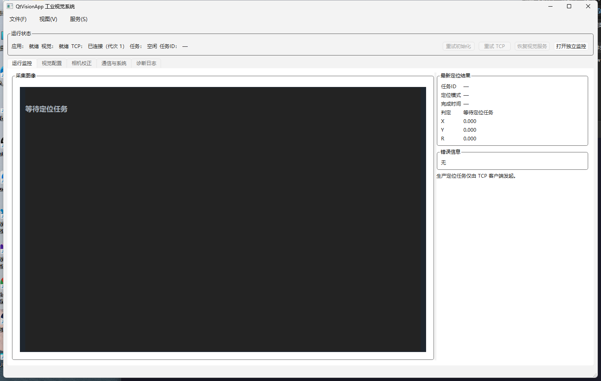
| 状态区域 | 阅读方式 |
|---|---|
| 应用 / 视觉 | 分别表示程序整体状态和视觉服务状态；应用启动不等于视觉可接受任务。 |
| TCP | “监听中”表示等待连接；“已连接（代次…）”表示有客户端；网络连接不等于视觉就绪。 |
| 任务 / 任务ID | 查看空闲、准备、执行、等待确认等状态，任务ID用于关联本次上位机命令。 |
| 最新定位结果 | 显示最近完成任务的ID、模式、完成时间、判定和坐标；恢复服务不会自动生成新定位结果。 |
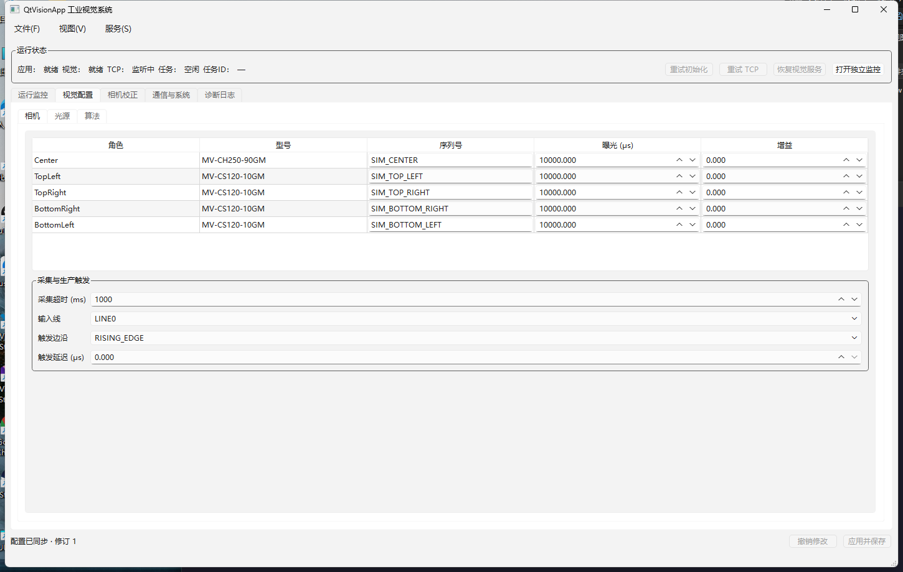
| 参数 | 示例值 / 含义 |
|---|---|
| 角色与型号 | Center → MV-CH250-90GM；四角 → MV-CS120-10GM。序列号必须正确、非空且按角色独立绑定。 |
| 曝光 / 增益 | 曝光示例 10000 μs，增益 0；曝光须为正，增益单位沿用设备 Gain 节点。实际可用范围由设备决定。 |
| 采集超时 | 示例 1000 ms；等待硬件采图的有限时间，与算法执行预算分开。 |
| 输入线 / 边沿 | LINE0 或 LINE2；RISING_EDGE 或 FALLING_EDGE，与上位机接线和信号一致。 |
| 触发延迟 | 示例 0 μs，非负；按实际触发时序配置。 |
界面曝光范围为 0.001～10000000 μs，增益输入范围为 -1000～1000；这些是编辑控件范围，不代表每台相机支持该全部范围。生产硬触发收到 locatePrepared 后，由外部系统提供约定触发信号。
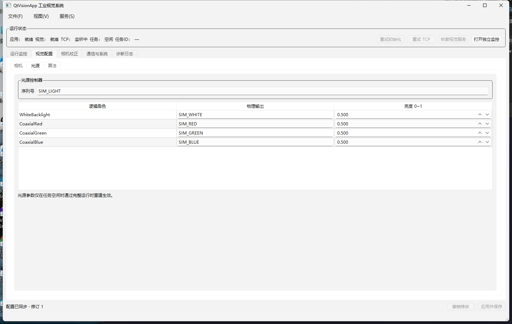
| 项目 | 说明 |
|---|---|
| WhiteBacklight | 白色背光，供 Edge 采集使用。 |
| CoaxialRed / Green / Blue | 同轴红、绿、蓝通道，供 MarkPoint 模式照明使用。 |
| outputSelector | 控制器真实输出选择名称；示例 SIM_*、REPLACE_* 不代表实物通道。四通道映射需独立且有效。 |
| normalizedIntensity | 范围 0.0～1.0，示例 0.5；适配器映射到设备支持的实际亮度范围。 |
光源参数通过空闲时受控应用生效。定位采集过程按模式控制照明并进行关灯清理；本界面没有独立手动开灯、脉冲时间编辑或光源 TCP 控制功能。控制器或通道不支持必需节点时，检查配置及诊断信息。
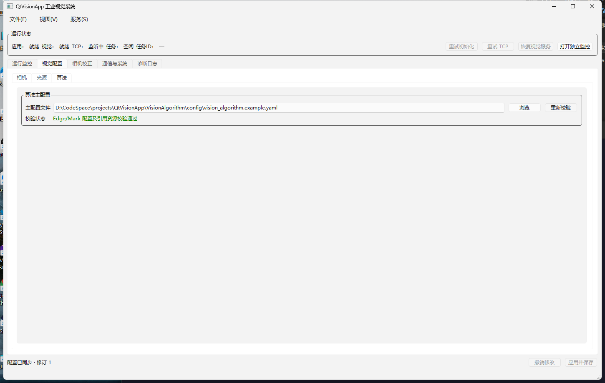
截图中的“Edge/Mark 配置及引用资源校验通过”是统一界面文案。实际加载取决于 enabled_algorithms 开关：当前示例仅启用 Edge，因此这条文案不表示已经完成真实 MarkPoint 模板识别验收。
主配置通过相对路径引用参数与标定文件；相对路径以拥有该引用的文件所在目录为基准。应用 JSON 的 algorithmConfigPath 则相对于应用 JSON 所在目录解析。配置必须整体兼容，不能只移动主文件而遗漏依赖文件。
若只修改了同一路径下的 YAML 内容，不能把“重新校验”当作运行时重新加载。建议维护人员准备完整的新配置目录并在界面切换路径，或安全退出后重新启动，使修改确定生效。
| 结果 | 含义与后续操作 |
|---|---|
| OK | 算法输出有效且 X/Y/R 有限；只有 OK 坐标可进入设备动作或打标流程。 |
| NG | 正常完成但目标/几何/质量条件不满足。最终 X=Y=R=0.0 为占位，不是有效零位。检查工件、图像与参数。 |
| ERROR | 硬件、算法、配置或内部执行失败。网络只发送稳定错误码和说明，不发送坐标；按错误原因处理。 |
| Busy | 已有任务、结果交付或维护流程占用。新定位不排队，应在空闲后重新发起；状态查询仍可用。 |
当前生产算法将图像点转换为物理点，X/Y 为四个物理角点或 Mark 点的平均中心坐标。R 使用左右中点连线相对物理 +X 轴的 atan2 角度，单位为度，归一化到 [-90°,90°)。物理轴方向和原点由标定定义；该输出不是自动减去某个示教中心的补偿量。
正确以毫米理论点建立标定后，X/Y 使用毫米。随库示例标定包含单位矩阵占位，未经实际标定的数值不能解释为设备毫米坐标。界面通常以三位小数显示，通信传输使用 double 数值。
入口为“运行监控”。上位机使用 mode="EDGE" 发起任务；真实模式需保证中心相机、白色背光、抓边 ROI 和中心标定可用。
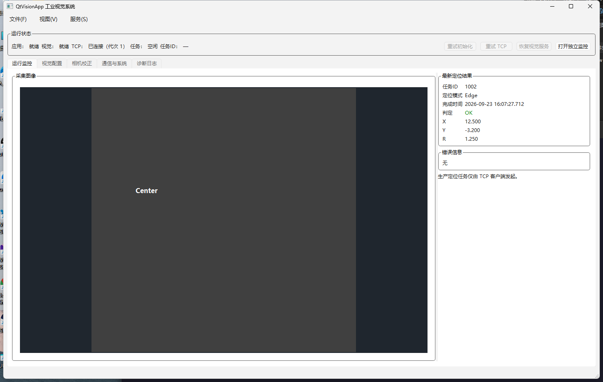
本图的灰色图像和坐标来自模拟配置，不是四边检测截图。真实算法会执行图像校正、四边卡尺采样、直线拟合、角点及物理位姿计算；检测不足或质量不合格时可得到 NG。
上位机使用 mode="MARK_POINT" 发起任务。真实运行要求四角相机齐备、四套标定处于统一物理坐标系、Mark 模板和各角色 ROI 有效，并启用 mark 算法。
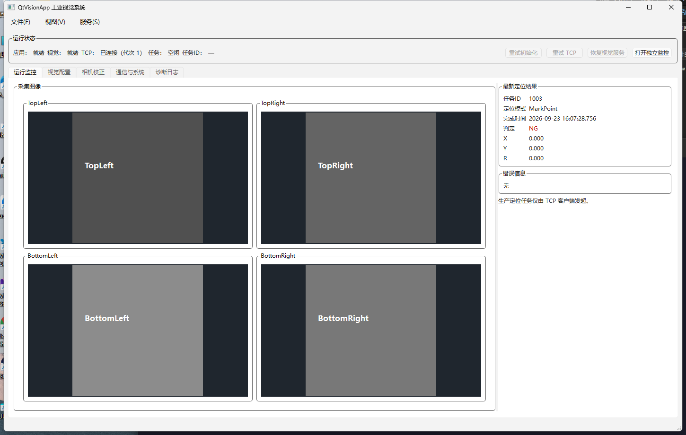
四角采集作为一次完整任务处理，缺少任一路不能用其余图像代替成功。模拟后端可以演示 MarkPoint 协议与四图展示，但不检查生产模板匹配效果。
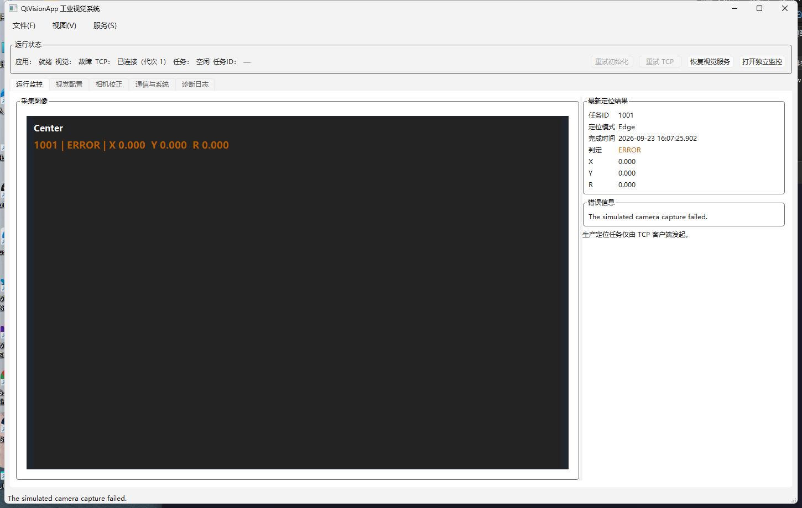
图中 HARDWARE_FAILURE 来自 simulation.failFirstCapture=true 的一次性故障注入。本次实际执行恢复后，下一 Edge 任务返回 OK。恢复不会重新执行失败任务，也不会将旧错误改成成功。
“重试初始化”用于初始化失败后的重建；“重试 TCP”用于网络监听失败；“恢复视觉服务”用于已建立运行时发生业务故障后的恢复。应根据当前状态使用对应入口。
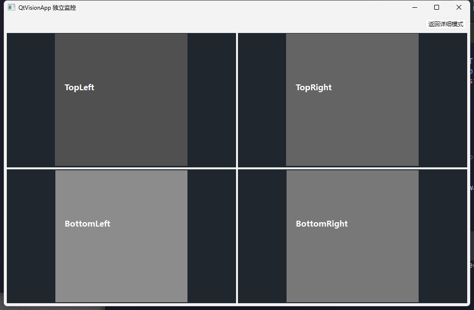
监控窗口用于集中观察图像，图中的单色块来自模拟相机。滚轮缩放、拖动平移、双击恢复适应。切换显示窗口不会改变 TCP 任务准入、定位模式或相机触发。
本窗口未设置生产定位按钮，也不单独显示详细窗口中的完整状态和坐标表。关闭窗口会进入应用退出流程；要继续运行并查看配置，应使用“返回详细模式”。
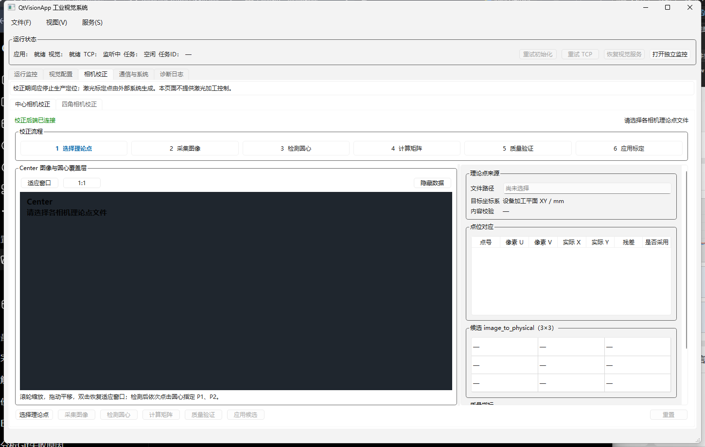
左侧为图像和圆心覆盖层，右侧为理论点来源、点位对应、候选矩阵及质量指标。右侧内容超出可视区域时可滚动；拖动中间分隔条调整宽度，点击“隐藏数据”扩大图像区，再点击“显示数据”恢复。
本次仅展示真实界面入口，未使用真实标定板完成结果求解。软件页面负责图像到加工平面映射，外部激光标定点由外部系统生成。现有相机内参、畸变及新内参仍需通过相应资源文件提供。
| 顺序 | 操作 | 观察与判断 |
|---|---|---|
| 1 | 选择理论点 | 以理论点文件行顺序定义 P1～PN，确认点数与配置的 n×n 网格相同。 |
| 2 | 采集图像 | 点击“采集图像”；取得维护锁后采集中心相机图像。检查标定网格是否完整、清晰、无明显遮挡。 |
| 3 | 检测圆心 | 点击“检测圆心”，检查圆心覆盖层；未检出完整点集时调整图像或检测参数后重试。 |
| 4 | 指定 P1、P2 | 在图中依次点击已检测的圆心。P1 是物理编号起点、须为网格角点；P2 是沿物理 +X 的直接相邻点。 |
| 5 | 计算矩阵 | 点击“计算矩阵”，检查点表中的像素 U/V 与实际 X/Y 对应及 3×3 候选 image_to_physical。 |
| 6 | 质量验证 | 点击“质量验证”，核对采用点数、RMS 和最大误差；只有质量通过才进入应用。 |
| 7 | 应用候选 | 点击“应用候选”，保存该角色标定并重新建立运行时；成功后确认视觉就绪。 |
| 8 | 重置 | 放弃当前流程时点击“重置”，清空页面会话结果并释放维护占用；重置不是恢复已应用的历史标定。 |
“适应窗口”按比例显示完整图像，“1:1”按原始像素显示；滚轮缩放、拖动平移、双击恢复适应。点表中的“是否采用”表示是否参与鲁棒拟合；RMS 和最大误差按全部理论对应点统计，包含未被拟合采用的点。
参数示例为 5×5 共25点，至少采用24点，RMS≤0.03 mm，最大残差≤0.08 mm；这些是随库示例阈值，不能视为真实设备已达到的精度。
采集开始后到应用成功或重置前，生产定位及部分维护操作返回 Busy。质量不通过属于候选不合格，应重新检查对应关系、图像和参数；不要将失败候选用于生产。
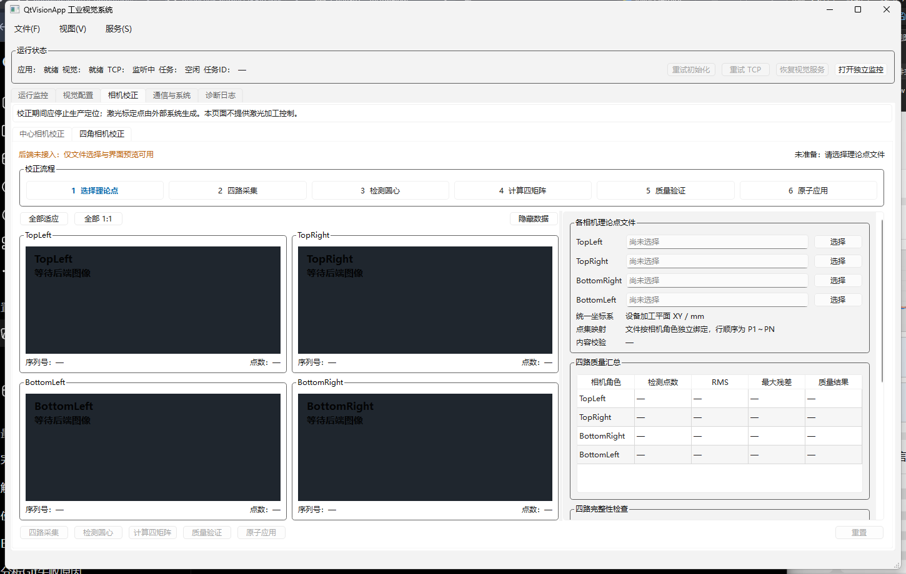
本次切换到该页面时，实际程序提示“后端未接入：仅文件选择与界面预览可用”，后续计算按钮禁用。因此本节提供入口与当前代码中的完整流程说明，不宣称本次已执行四路标定。应以实际后端提示和按钮可用状态为准。
左侧四图布局按相机角色排列，并显示序列号和点数；右侧含角色文件、四路质量汇总、完整性检查及候选应用信息。使用“全部适应”“全部1:1”统一调整显示，“隐藏数据/显示数据”切换数据面板。
校正目标文件由算法主配置的 calibration 节点确定。应用时保留原文件中的图像尺寸、相机内参、畸变及新内参，只替换 image_to_physical。候选与备份在原文件同目录产生，随后执行校验、替换与运行时重建。
可捕获失败时程序尝试恢复原文件和旧运行时；恢复失败会使视觉服务进入故障状态，需维护人员检查文件及诊断。本阶段没有断电或进程崩溃恢复日志保证，应用过程中保持电源稳定，重要标定应另行备份。
校正采集用于维护，不调用生产定位算法，也不会形成生产 OK/NG 位姿。修改已应用标定前应保留原配置和对应设备信息，避免把不同角色或不同镜头条件下的标定交叉使用。
理论点为 UTF-8 文本，严格两列 X,Y，单位为毫米。每个非空行是一个点，文件行顺序即 P1～PN；无表头、注释或额外列。允许 BOM、空白和空行。数值须有限、点互不重复且整体非共线。文件名及扩展名不用于推断角色。
网格边长 n 支持3～15，点数为 n²；当前示例 n=5，必须提供25个点。四角相机四份文件点数须一致，各自按相机角色独立绑定，并使用统一加工坐标系。物理编号从左下角 P1 开始，每行沿 +X、各行沿 +Y。
0,0 10,0 20,0 30,0 40,0 0,10 10,10 20,10 30,10 40,10 ……（正文省略中间行，附件包含完整25行） 0,40 10,40 20,40 30,40 40,40
附件 theoretical_points_5x5.csv 是10 mm等间距的格式示例，仅用于学习文件规则；不是实际设备测量数据。实际使用允许有序实测的非等间距理论坐标，应与真实网格、物理方向和角色一致。请勿将正文中的省略行写入输入文件。
带“X,Y”表头、三列坐标、NaN/Inf、重复点、数量不是完整方阵、四角文件点数不一致、行顺序与 P1/P2 方向不一致，都需要修正。表格软件另存文件时确认使用英文逗号和数值格式。
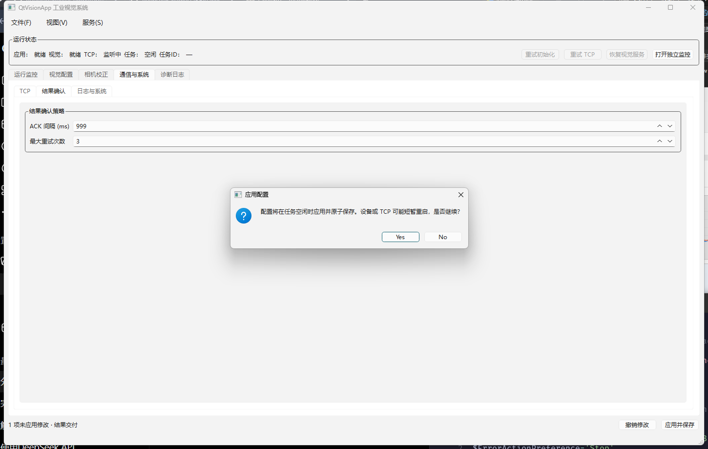
截图将演示配置 ACK 间隔由1000改为999 ms，仅用于显示编辑与保存过程，不是推荐生产值。运行配置变更按受控流程生效；失败时查看提示和诊断，程序尝试恢复原配置。
相机、光源和算法相关变更会重新创建视觉运行时；TCP 变更会断开当前客户端并重新监听。生产任务开始后不能以编辑配置来取消定位。
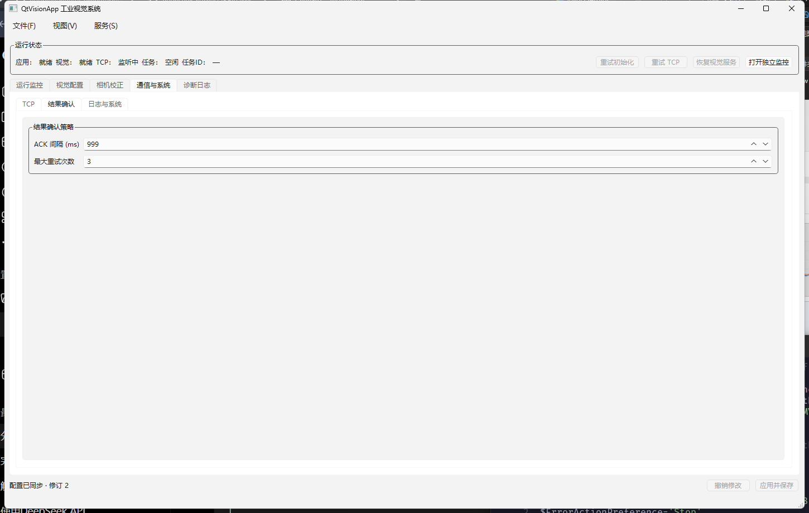
配置由应用保存到启动 --config 指定的文件，不是任意另存文件。应用 JSON 保存使用受控文件写入，路径会按文件位置处理。不要在运行时同时用外部编辑器覆盖应用正在保存的同一个 JSON。
单纯修改同一路径下的算法 YAML 不会自动触发在线重载。通过切换已准备好的主配置路径或安全重启加载文件修改。生产参数应先备份，再在维护空闲期修改和核验。
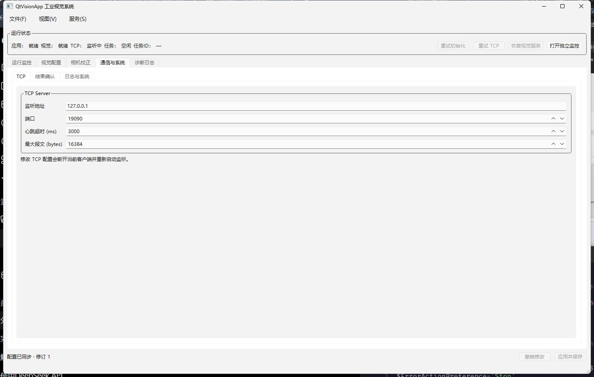
| 参数 | 仓库示例 / 使用说明 |
|---|---|
| 监听地址 | 真实示例为0.0.0.0，表示绑定本机可用接口；模拟示例为127.0.0.1，仅本机联调。客户端应连接实际主机IP。 |
| 端口 | 仓库示例9000，可选1～65535；不得与其他服务冲突。 |
| 心跳超时 | 示例3000 ms；上位机通常每秒发送一次 heartbeat，超时关闭连接。 |
| 最大报文 | 示例16384 bytes，单条 UTF-8 JSON 换行报文的大小限制；UI下限256 bytes。 |
同一时刻只允许一个客户端。第二客户端被拒绝；断线不会取消已开始的定位。原连接断开后，旧任务结果不会补发给新连接。网络防火墙应允许实际使用的程序和监听端口。
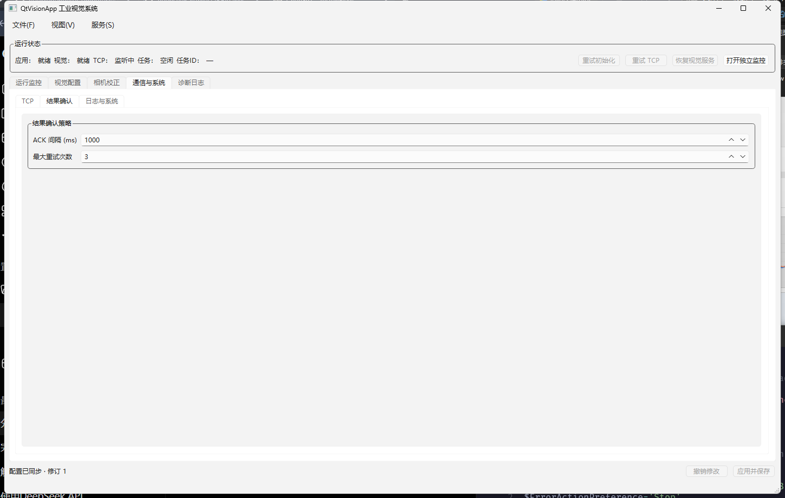
| 参数 / 行为 | 说明 |
|---|---|
| ACK 间隔 | 仓库示例1000 ms；决定等待结果确认和再次发送的间隔。 |
| 最大重试次数 | 仓库示例3，界面允许0～100；具体值按上位机处理时间和通信策略确定。 |
| 重发内容 | 只重发已确定的网络结果，不重新采集或重新运行定位算法。 |
| 等待确认 | 属于结果交付阶段，界面任务可能显示等待确认；新定位仍受忙状态限制。 |
| 断线 | 新连接不接管旧连接在途任务，可查询当前状态后决定下一步。 |
结果ACK与心跳是不同报文。收到定位结果并发送ACK后，仍需持续发送 heartbeat 维持连接。重试耗尽时查看诊断和上位机收包记录，不应把已完成定位误判为算法未执行。
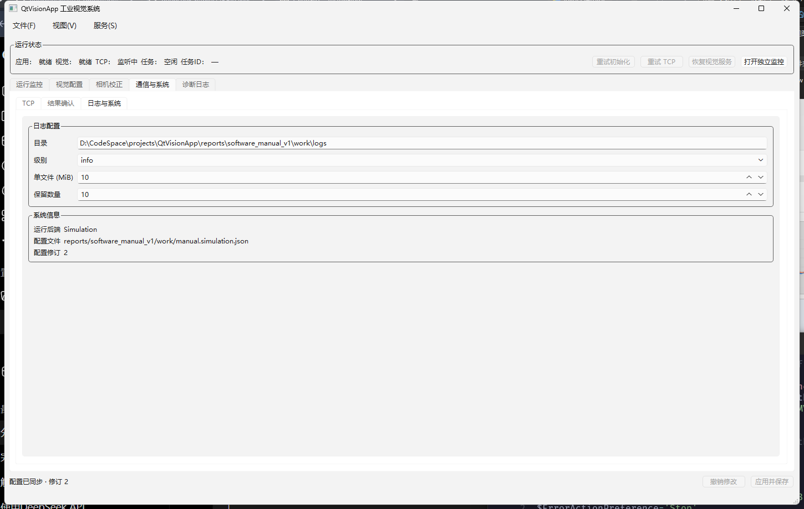
| 参数 | 说明 |
|---|---|
| 目录 | 主日志文件为 vision_app.log；相对目录以应用 JSON 所在目录解析。 |
| 级别 | trace、debug、info、warn、error、critical、off；示例info。off 关闭日志记录。 |
| 单文件 | 示例10 MiB；达到轮转大小后使用轮转文件，界面范围1～1024 MiB。 |
| 保留数量 | 示例10；用于轮转文件保留策略，界面范围1～1000。按实际磁盘容量管理。 |
| 运行后端 | Hik 为设备后端；Simulation 为演示后端。 |
| 配置修订 | 反映当前会话的配置提交更新，不等同于软件版本号。 |
日志目录不可创建、不可写或磁盘空间不足时，检查权限与存储状态。移交问题时保留时间段、任务ID、配置修订及相关日志。
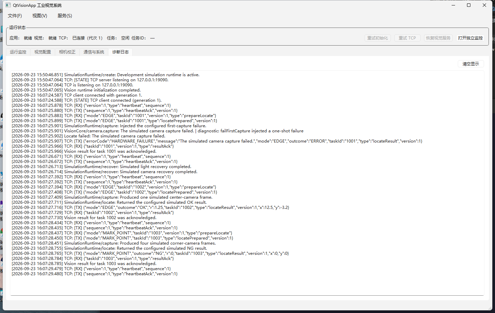
界面诊断最多保留约1000个文本块用于阅读，完整日志按日志配置落盘。“清空显示”不删除磁盘日志，也不清除设备故障状态。错误恢复应使用对应服务入口。
对外通信的错误包含稳定错误码和可读说明；底层SDK原始码、内部上下文和第三方异常细节保留在诊断或日志中。分析问题应以错误码分类，再结合设备和配置检查。
| 现象 / 错误 | 检查与处理 |
|---|---|
| 程序无法启动 | 核对x64运行库、Qt平台插件、OpenCV DLL、--config 参数和JSON格式。 |
| 初始化失败 / InvalidConfiguration | 检查五相机与四光源角色完整性、序列号、路径、参数类型、标定和模板资源；修正后重试初始化。 |
| HardwareUnavailable | 检查设备供电、网口、序列号、驱动、控制器枚举及设备是否被其他程序占用。 |
| HardwareFailure | 保留任务和诊断，检查硬件通信和设备状态；排除问题后恢复视觉服务。 |
| HardwareTimeout | 检查外部触发是否发生、触发线与边沿是否一致、四角帧是否收齐，以及采集有限等待设置。 |
| AlgorithmTimeout | 检查图像尺寸、搜索范围、算法参数和实际负载；它是错误，不是NG。 |
| InvalidImage | 检查灰度格式、图像完整性、标定尺寸匹配、角色帧数及四路采集。 |
| AlgorithmFailure / InvalidResult | 检查算法资源、几何与坐标变换；保存相关日志交维护人员分析。 |
| TCP未监听 / 连接失败 | 检查IP、端口占用、防火墙；修改后重试TCP，区分未监听与监听但无客户端。 |
| 连接约3秒后断开 | 核对是否持续发送合法heartbeat，而不只是查询状态或确认结果。 |
| 忙 / 按钮不可用 | 等待任务和结果交付结束；标定维护需应用完成或重置；检查配置应用状态。 |
| 校正圆心不完整 / 质量不通过 | 核对网格规格、理论点数、P1/P2、对焦、照明、完整视野及检测阈值。 |
| 配置应用失败 | 检查文件权限和新配置可用性，查看旧配置恢复是否成功；恢复失败时先处理故障。 |
NotReady 表示服务不具备执行条件，Busy 表示当前正在处理其他受互斥约束的工作。InternalFailure 应结合详细日志处理。软件没有强制取消当前定位功能，退出时等待在途任务自然返回。
| 文件 / 类型 | 用途与维护入口 |
|---|---|
| config/vision_app.example.json | 真实后端应用示例；TCP、相机、光源、结果确认、日志和算法主路径。 |
| config/vision_app.simulation.example.json | 模拟后端示例，额外包含simulation配置。 |
| VisionAlgorithm/config/vision_algorithm.example.yaml | 算法入口：超时、启用模式、标定与算法参数引用。 |
| parameters/edge.example.yaml | 四边ROI、卡尺采样、亚像素和抓边质量条件。 |
| parameters/mark_point.example.yaml | 四角搜索ROI、输入尺寸、模板引用及位姿质量条件。 |
| parameters/calibration.example.yaml | 标定网格规格、每相机圆心检测参数、求解与质量阈值。 |
| calibration/*.example.yaml | 五台相机各自的图像尺寸、内参、畸变、新内参和像素到物理变换。 |
| Mark模型YAML | 由mark参数中的template_file_pattern和template_info_file引用；应作为兼容模型组提供。 |
| 理论点文本/CSV | 按角色选入校正界面，不带表头的X,Y坐标行。 |
| 日志 / 界面偏好 | 日志按配置轮转；窗口布局等偏好由Qt设置保存，不是算法或生产配方。 |
表中的 parameters 与 calibration 位于算法主配置目录下。程序不提供所有 YAML 字段的图形化编辑器，文件维护由调试人员完成，再通过主配置路径加载和校验。当前界面没有模板自由绘制或一键训练入口。
schemaVersion 当前为1。tcp 设置网络；vision 包含 captureTimeoutMs、algorithmConfigPath、productionTrigger、cameras、lightController；resultDelivery 设置确认策略；logging 设置日志；simulation 为开发联调选项。应保留完整结构，避免遗漏必需字段。
%YAML:1.0 --- timeout_ms: 500 enabled_algorithms: edge: 1 mark: 0 calibration: parameters: "parameters/calibration.example.yaml" center: "calibration/center.example.yaml" top_left: "calibration/top_left.example.yaml" top_right: "calibration/top_right.example.yaml" bottom_right: "calibration/bottom_right.example.yaml" bottom_left: "calibration/bottom_left.example.yaml" edge: parameters: "parameters/edge.example.yaml" mark: parameters: "parameters/mark_point.example.yaml"
timeout_ms 示例500 ms，是一次生产算法调用的协作式预算；MarkPoint 四图识别与融合共享这一预算。算法在主要阶段边界检查超时，不能把500 ms理解为整个Locate或函数返回时间的硬上限。采图和光源不消耗此算法预算。
edge/mark 为0或1的启用标记，按实际模式准备资源。启用Mark时需有效四角参数、标定和模板；对未启用算法发起任务会失败，不能只依靠TCP接受模式字符串判断资源已准备完成。
配置主文件可以引用不同目录的资源，所有相对引用按引用所在文件定位。拷贝一个完整配套目录比单独拷贝某个矩阵或模板更便于维护与恢复。
文件：parameters/edge.example.yaml。每条边 top、right、bottom、left 含 first、second 两个ROI，总计八个采样区域。ROI 坐标位于校正后的中心图像中，应避开倒角、机械臂遮挡和无关轮廓。
| 字段 | 含义 / 示例 |
|---|---|
| center_px | ROI中心 [x,y]，单位像素；随库顶边first示例 [1400,860]。 |
| scan_angle_deg | 扫描方向，单位度；示例顶边90、右边180、底边-90、左边0。 |
| search_length_px | 沿扫描方向的搜索长度，示例420 px。 |
| span_length_px | 横向采样跨度，示例520或700 px，按边段设置。 |
| sample_count | 每个ROI采样数量，示例32。 |
| polarity | 边缘灰度变化方向，示例light_to_dark；应符合实际工件与背景。 |
| caliper.smoothing_kernel_size | 平滑核尺寸，示例5。 |
| caliper.minimum_gradient | 最小边缘梯度，示例20。 |
| caliper.enable_subpixel | 是否启用亚像素，示例1。 |
| caliper.minimum_points_per_roi | 每ROI最低有效点数，示例12。 |
| quality.edge_mode | 四边长度与两条对角线长度的lower/upper限制。 |
| quality.offset_result | absolute_angle_deg范围及maximum_center_offset约束。 |
长度和中心偏移阈值采用 image_to_physical 输出坐标单位；当前示例含极宽范围，仅用于流程配置。maximum_center_offset 检查目标中心与校正图像中心映射后的距离，并不使最终X/Y变成偏移量。
文件：parameters/mark_point.example.yaml。camera_rois 的键表示相机角色，各ROI均在其对应相机图像内，不能把四个ROI当作一台相机的四个角。
| 字段 | 含义 / 随库示例 |
|---|---|
| input_image | width_px=4024、height_px=3036，应与实际角相机图像及标定尺寸一致。 |
| camera_rois.<角色> | x_px、y_px、width_px、height_px；示例均为左上起点的200×200区域，仅作结构说明。 |
| shape_matcher.class_id | 示例mark，与模型中的类别保持一致。 |
| template_file_pattern | 示例../../models/mark/%s_templ.yaml，%s为模型类别模式。 |
| template_info_file | 示例../../models/mark/mark_info.yaml，与模板配套。 |
| template_image_width_px / height_px | 未补边模板原图尺寸，示例200×200；当前以原图中心作为匹配参考点。 |
| detector | num_features=128；pyramid_t=[4,8]；weak_threshold=30；strong_threshold=60。需与建模兼容。 |
| quality.mark_geometry | 四边及两对角线长度的上下限。 |
| quality.pose_result | center_x、center_y及absolute_angle_deg的上下限。 |
模板匹配本身的建模角度范围、尺度、相似度等部分参数固定在当前代码中，未开放为生产YAML字段；不要添加看似合理但程序未读取的配置字段。当前UI不提供模板训练按钮。模型应由配套离线流程提供，和匹配器版本、类别、原图尺寸及特征参数一致。
四角标定应输出统一物理坐标，才能把四点平均为设备位姿。示例mark=0时不代表已具备生产模板；启用前应完成资源准备与真实工件验证。
| calibration参数 | 含义 / 示例 |
|---|---|
| grid_side_points | 网格边长n，3～15；示例5，目标为完整对称5×5圆点阵。 |
| detection.<角色>.blob_color | 圆点相对背景颜色，dark或light；示例dark。 |
| minimum_threshold / maximum_threshold | 灰度阈值范围，示例20～240；须满足0≤最小<最大≤255。 |
| threshold_step / minimum_repeatability | 阈值步长10、重复检测次数2；需适合阈值范围。 |
| minimum_distance_px | 候选圆点最小间距，示例20 px。 |
| minimum_area_px2 / maximum_area_px2 | 圆点面积范围，示例100～10000 px²。 |
| minimum_circularity | 最小圆度，示例0.75。 |
| solver.ransac_threshold_mm | 鲁棒求解残差阈值，示例0.05 mm。 |
| quality.minimum_used_points | 拟合最低采用点数，必须为N-1或N；示例24。 |
| quality.maximum_rms_error_mm | 全部对应点RMS上限，示例0.03 mm。 |
| quality.maximum_residual_mm | 全部对应点最大残差上限，示例0.08 mm。 |
image_width、image_height 为图像尺寸；camera_matrix 为3×3内参；distortion_coefficients 为畸变系数；new_camera_matrix 为校正后内参；image_to_physical 为3×3图像到物理平面的变换。矩阵按OpenCV YAML格式保存。
中心示例为5120×5120、四角示例为4024×3036。随库文件包含占位内参与矩阵，不能直接用于生产坐标换算。界面校正更新image_to_physical，不重新标定镜头内参和畸变。
模拟功能通过应用 JSON 的 simulation 节点配置，并在启动时指定 --backend simulation。它用于无硬件环境下验证界面、任务准入、结果交付和异常恢复，不会调用真实相机或生产定位算法。
| 字段 | 说明 / 仓库示例 |
|---|---|
| enabled | true允许使用模拟后端；仅修改该字段不会把hik实例自动切换到模拟。 |
| locateDelayMs | 示例300 ms，模拟算法执行的延时，用于观察任务状态，不是生产算法预算。 |
| failFirstCapture | 示例true，每次新建模拟运行时的首次采集注入一次HardwareFailure，之后可演示恢复。 |
| edgeResult.outcome | OK或NG；示例OK。 |
| edgeResult.x / y / r | OK示例为12.5、-3.2、1.25，用于演示数值传递。 |
| markPointResult.outcome | 示例NG；最终三个坐标统一为0.0。 |
"simulation": {
"enabled": true,
"locateDelayMs": 300,
"failFirstCapture": true,
"edgeResult": {"outcome":"OK","x":12.5,"y":-3.2,"r":1.25},
"markPointResult": {"outcome":"NG"}
}
本节点没有独立UI编辑页。修改模拟参数后应安全退出并以更新后的文件重新启动，确保新建运行时使用修改值。模拟结果只能证明流程和数据传递，不能作为算法准确性、相机性能或生产标定的结论。
传输为TCP长连接，每条消息是UTF-8紧凑JSON对象，以换行符 LF（\n）结束，version固定为1。不可省略换行；一次接收可能包含半条或多条消息，客户端也需正确组包。
| 客户端命令 | 字段与用途 |
|---|---|
| prepareLocate | taskId 为1～20位非零十进制字符串；mode为EDGE或MARK_POINT；申请定位。 |
| resultAck | taskId与最终结果一致；确认OK、NG或ERROR。 |
| heartbeat | sequence为uint32；建议每秒发送一次，返回heartbeatAck。 |
| queryStatus | sequence为uint32；查询应用/视觉/任务状态，返回statusReply，忙时可使用。 |
| recover | sequence为uint32；申请视觉恢复，返回recoverResult，受当前状态约束。 |
| 服务端消息 | 含义 |
|---|---|
| locatePrepared | 目标相机已准备采集，真实外部触发由设备系统按约定提供。 |
| prepareRejected | 当前不能接受任务，例如Busy或NotReady；不要等待定位结果。 |
| locateResult | 最终OK、NG或ERROR。OK/NG携带坐标，ERROR携带errorCode和message。 |
| protocolError | 协议版本、格式、字段或消息大小错误；部分错误会导致断开。 |
taskId示例使用"1002"，保持为JSON字符串。mode在界面显示为Edge/MarkPoint，在网络中使用大写EDGE/MARK_POINT。没有CancelCommand，也没有通过断线取消定位的机制。
{"version":1,"type":"heartbeat","sequence":1}
{"version":1,"type":"queryStatus","sequence":2}
{"version":1,"type":"prepareLocate","taskId":"1002","mode":"EDGE"}
{"version":1,"type":"locatePrepared","taskId":"1002","mode":"EDGE"}
{"version":1,"type":"locateResult","taskId":"1002","mode":"EDGE","outcome":"OK","x":12.5,"y":-3.2,"r":1.25}
{"version":1,"type":"resultAck","taskId":"1002"}
{"version":1,"type":"locateResult","taskId":"1003","mode":"MARK_POINT","outcome":"NG","x":0.0,"y":0.0,"r":0.0}
{"version":1,"type":"locateResult","taskId":"1001","mode":"EDGE","outcome":"ERROR","errorCode":"HARDWARE_FAILURE","message":"The simulated camera capture failed."}
{"version":1,"type":"recover","sequence":3}
上述多行依次演示消息，发送方向依type区分；每条实际发送时应为单行JSON并追加换行。ERROR与NG同样需要resultAck。ERROR示例为本次模拟注入故障的真实报文。
.\tools\demo_tcp_client.ps1 -ServerAddress 127.0.0.1 -ServerPort 9000
脚本应配合仓库默认模拟配置运行，用于状态、首次故障与恢复、忙状态、Edge OK、MarkPoint NG、心跳和确认流程联调。若使用本次文档独立实例，端口改为19090；首次故障已消耗的实例应重新启动再运行脚本。该脚本不是操作界面功能。
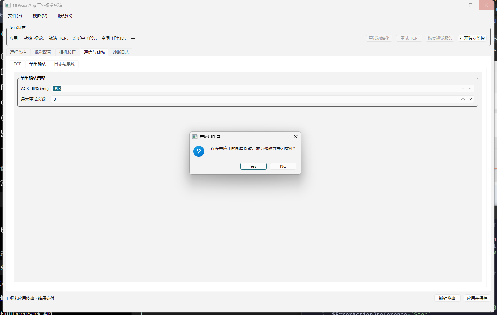
定期配套备份应用JSON、算法主文件、参数、五台相机标定及模型资源，并记录适用设备和日期。更换镜头、相机、安装位置或光学条件后，应重新评估标定与定位参数。日志按容量轮转，重要故障记录应在轮转前另行保存。
软件没有单独的任务取消按钮，不在主线程同步等待视觉任务；退出期间界面可能短时保持关闭中状态。算法预算是协作式检查，实际返回可能晚于预算；硬件操作使用各自有限等待。
| 术语 | 含义 |
|---|---|
| Center / 四角角色 | 中心、左上、右上、右下、左下相机的稳定角色标识。 |
| ROI | 图像中的搜索或采样区域。 |
| P1 / P2 | 理论点起点与沿物理+X的直接邻点，用于建立网格方向。 |
| image_to_physical | 校正后图像坐标到设备加工平面坐标的变换。 |
| RMS / 最大残差 | 点位映射误差的均方根与最大值，用于候选标定质量判断。 |
| Ready / Faulted / Recovering | 视觉就绪、故障、恢复中等服务状态，与TCP连接状态分开。 |
| Preparing / Running / AwaitingResultAck | 准备、执行、等待上位机确认的任务阶段。 |
| Simulation / Hik | 模拟运行后端 / 海康设备后端。 |
界面：文件、视图、服务菜单；运行监控；相机、光源、算法；中心与四角校正；TCP、结果确认、日志与系统；诊断日志；配置保存与未保存退出。文件：应用JSON、算法主文件、Edge参数、Mark参数与模板引用、标定参数、五角色标定和理论点。
编写依据为本项目软件说明书.txt、现有界面与实现代码、配置示例和本次实际模拟运行。全文没有将本次模拟结果当作生产验收；真实设备安装、实际坐标精度、标定完整结果及未接入页面的最终表现，应在后续版本补充。
正式提交前补齐实际著作权人，确认申请表软件全称/简称/版本与本文一致，并在需要时替换为最终交付版本的实际截图。当前软件简称QtVisionApp与窗口显示一致。